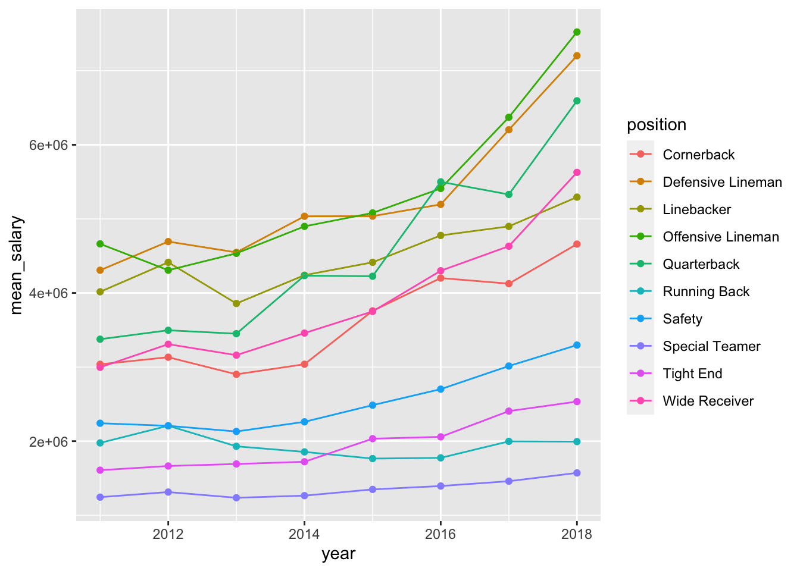
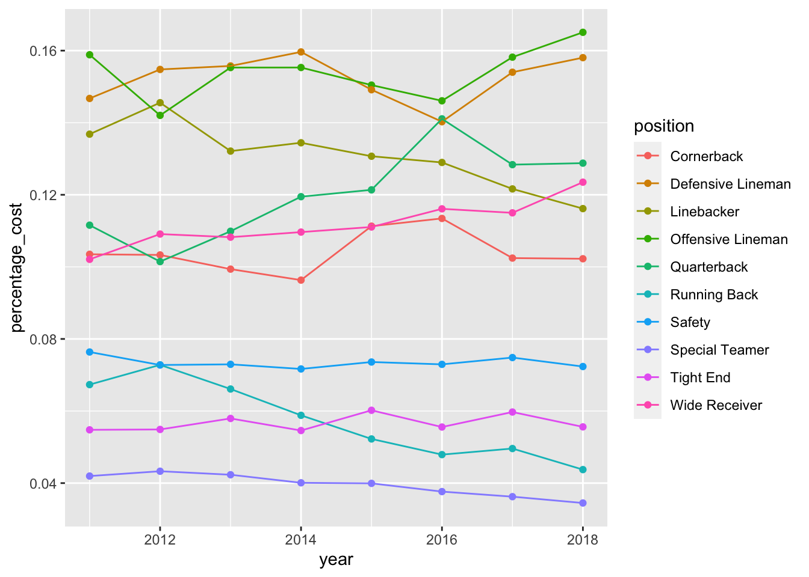

Module 7 Data Wrangling
7.1 Load libraries
Load tidyverse using library()
Our data for this module is an excel spreadsheet, so we need to install a new package to handle this type of data.
7.2 Read your data in
After readxl package installation is done:
load
readxlusinglibrary()check your working environment with
getwd()anddir()load your data
- inspect your data with
summary(),glimpse()andView()
## Rows: 800
## Columns: 11
## $ year <dbl> 2011, 2011, 2011, 2011, 2011, 2011, 2011, 2011, 2…
## $ Cornerback <dbl> 11265916, 11000000, 10000000, 10000000, 10000000,…
## $ `Defensive Lineman` <dbl> 17818000, 16200000, 12476000, 11904706, 11762782,…
## $ Linebacker <dbl> 16420000, 15623000, 11825000, 10083333, 10020000,…
## $ `Offensive Lineman` <dbl> 15960000, 12800000, 11767500, 10358200, 10000000,…
## $ Quarterback <dbl> 17228125, 16000000, 14400000, 14100000, 13510000,…
## $ `Running Back` <dbl> 12955000, 10873833, 9479000, 7700000, 7500000, 70…
## $ Safety <dbl> 8871428, 8787500, 8282500, 8000000, 7804333, 7652…
## $ `Special Teamer` <dbl> 4300000, 3725000, 3556176, 3500000, 3250000, 3225…
## $ `Tight End` <dbl> 8734375, 8591000, 8290000, 7723333, 6974666, 6133…
## $ `Wide Receiver` <dbl> 16250000, 14175000, 11424000, 11415000, 10800000,…How many observations are there?
What variables are there in the data?
7.3 Summarise data
QUESTIONS:
Have salaries for different NFL positions increased between 2011 and 2018?
What positions pay more and less?
Let’s summarise the mean salary for Quarterback by year.
nfl_salary %>%
group_by(year) %>%
summarise(quarterback_mean_salary = mean(Quarterback, na.rm = TRUE))## `summarise()` ungrouping output (override with `.groups` argument)## # A tibble: 8 x 2
## year quarterback_mean_salary
## <dbl> <dbl>
## 1 2011 3376113.
## 2 2012 3496408.
## 3 2013 3450185.
## 4 2014 4234160.
## 5 2015 4225789.
## 6 2016 5499939.
## 7 2017 5329727.
## 8 2018 6593769.What would we do to add the mean salary for Cornerback?
nfl_salary %>%
group_by(year) %>%
summarise(quarterback_mean_salary = mean(Quarterback, na.rm = TRUE),
cornerback_mean_salary = mean(Cornerback, na.rm = TRUE))## `summarise()` ungrouping output (override with `.groups` argument)## # A tibble: 8 x 3
## year quarterback_mean_salary cornerback_mean_salary
## <dbl> <dbl> <dbl>
## 1 2011 3376113. 3037766.
## 2 2012 3496408. 3132916.
## 3 2013 3450185. 2901798.
## 4 2014 4234160. 3038278.
## 5 2015 4225789. 3758543.
## 6 2016 5499939. 4201470.
## 7 2017 5329727. 4125692.
## 8 2018 6593769. 4659704.Let’s stop and think about how our data is organized. Is our data tidy?
We have columns that mix two type of variables:
categorical variable for position
numeric variable for salary
7.4 Tidy data
In order to make our data easier to work with, we need to make sure each column in our data represents just one variable. To do that for our nfl_salary dataframe, we need to pivot it.
nfl_salary_tidy <- nfl_salary %>%
pivot_longer(cols = -year,
names_to = "position",
values_to = "salary")Always inspect your new data frame.
## Rows: 8,000
## Columns: 3
## $ year <dbl> 2011, 2011, 2011, 2011, 2011, 2011, 2011, 2011, 2011, 2011, …
## $ position <chr> "Cornerback", "Defensive Lineman", "Linebacker", "Offensive …
## $ salary <dbl> 11265916, 17818000, 16420000, 15960000, 17228125, 12955000, …How many positions are there in the data? We can now do a count() with our categorical variable for position
## # A tibble: 10 x 2
## position n
## <chr> <int>
## 1 Cornerback 800
## 2 Defensive Lineman 800
## 3 Linebacker 800
## 4 Offensive Lineman 800
## 5 Quarterback 800
## 6 Running Back 800
## 7 Safety 800
## 8 Special Teamer 800
## 9 Tight End 800
## 10 Wide Receiver 800We can add year to our group_by to check how many observations per position across year
## # A tibble: 80 x 3
## position year n
## <chr> <dbl> <int>
## 1 Cornerback 2011 100
## 2 Cornerback 2012 100
## 3 Cornerback 2013 100
## 4 Cornerback 2014 100
## 5 Cornerback 2015 100
## 6 Cornerback 2016 100
## 7 Cornerback 2017 100
## 8 Cornerback 2018 100
## 9 Defensive Lineman 2011 100
## 10 Defensive Lineman 2012 100
## # … with 70 more rowsLet’s check for NAs (i.e., missing data), we can do that by using is.na() and filter().
## # A tibble: 9 x 3
## position year n
## <chr> <dbl> <int>
## 1 Quarterback 2011 3
## 2 Quarterback 2012 12
## 3 Quarterback 2013 7
## 4 Quarterback 2014 11
## 5 Quarterback 2015 3
## 6 Quarterback 2016 5
## 7 Quarterback 2017 3
## 8 Quarterback 2018 11
## 9 Special Teamer 2011 1We can remove these rows from our data frame.
Inspect your new data frame.
## Rows: 7,944
## Columns: 3
## $ year <dbl> 2011, 2011, 2011, 2011, 2011, 2011, 2011, 2011, 2011, 2011, …
## $ position <chr> "Cornerback", "Defensive Lineman", "Linebacker", "Offensive …
## $ salary <dbl> 11265916, 17818000, 16420000, 15960000, 17228125, 12955000, …Now we can do our salary summarise() in a cleaner way. We are going to do a mean() of our numeric variable salary by year AND position.
## `summarise()` regrouping output by 'year' (override with `.groups` argument)## # A tibble: 80 x 3
## # Groups: year [8]
## year position mean_salary
## <dbl> <chr> <dbl>
## 1 2011 Cornerback 3037766.
## 2 2011 Defensive Lineman 4306995.
## 3 2011 Linebacker 4016045.
## 4 2011 Offensive Lineman 4662748.
## 5 2011 Quarterback 3376113.
## 6 2011 Running Back 1976341.
## 7 2011 Safety 2241891.
## 8 2011 Special Teamer 1244069.
## 9 2011 Tight End 1608100.
## 10 2011 Wide Receiver 2996590.
## # … with 70 more rowsWe can do the group_by both ways (first year and then position or vice-versa).
nfl_salary_tidy_clean %>%
group_by(position, year) %>%
summarise(mean_salary = mean(salary)) %>%
arrange(mean_salary)## `summarise()` regrouping output by 'position' (override with `.groups` argument)## # A tibble: 80 x 3
## # Groups: position [10]
## position year mean_salary
## <chr> <dbl> <dbl>
## 1 Special Teamer 2013 1235892.
## 2 Special Teamer 2011 1244069.
## 3 Special Teamer 2014 1264493.
## 4 Special Teamer 2012 1313043.
## 5 Special Teamer 2015 1348637.
## 6 Special Teamer 2016 1394443.
## 7 Special Teamer 2017 1459552.
## 8 Special Teamer 2018 1571447.
## 9 Tight End 2011 1608100.
## 10 Tight End 2012 1664520.
## # … with 70 more rowsAdd a - (minus) sign to the argument in arrange() to arrange your results by decreasing order of mean_salary.
nfl_salary_tidy_clean %>%
group_by(position, year) %>%
summarise(mean_salary = mean(salary)) %>%
arrange(-mean_salary)## `summarise()` regrouping output by 'position' (override with `.groups` argument)## # A tibble: 80 x 3
## # Groups: position [10]
## position year mean_salary
## <chr> <dbl> <dbl>
## 1 Offensive Lineman 2018 7522647.
## 2 Defensive Lineman 2018 7202360.
## 3 Quarterback 2018 6593769.
## 4 Offensive Lineman 2017 6370947.
## 5 Defensive Lineman 2017 6202601.
## 6 Wide Receiver 2018 5627721.
## 7 Quarterback 2016 5499939.
## 8 Offensive Lineman 2016 5410392.
## 9 Quarterback 2017 5329727.
## 10 Linebacker 2018 5293675.
## # … with 70 more rowsWe can also add arrange() to our code block.
nfl_salary_tidy_clean %>%
group_by(position, year) %>%
summarise(mean_salary = mean(salary)) %>%
arrange()## `summarise()` regrouping output by 'position' (override with `.groups` argument)## # A tibble: 80 x 3
## # Groups: position [10]
## position year mean_salary
## <chr> <dbl> <dbl>
## 1 Cornerback 2011 3037766.
## 2 Cornerback 2012 3132916.
## 3 Cornerback 2013 2901798.
## 4 Cornerback 2014 3038278.
## 5 Cornerback 2015 3758543.
## 6 Cornerback 2016 4201470.
## 7 Cornerback 2017 4125692.
## 8 Cornerback 2018 4659704.
## 9 Defensive Lineman 2011 4306995.
## 10 Defensive Lineman 2012 4693730.
## # … with 70 more rows7.4.1 Viz Demo
We can also visualize our data using ggplot().
First we save our summary results in a new dataframe called nfl_salary_summary.
nfl_salary_summary <- nfl_salary_tidy_clean %>%
group_by(position, year) %>%
summarise(mean_salary = mean(salary)) %>%
arrange()## `summarise()` regrouping output by 'position' (override with `.groups` argument)Then we plot it.
nfl_salary_summary %>%
ggplot(aes(x = year, y = mean_salary,
color = position,
group = position)) +
geom_point() +
geom_line()
7.5 Transform Data
Now that our data is tidy, we can transform our data by adding new variables/columns to it.
It seems some salaries for certain positions show a higher increase across the years than the salaries for other positions. In other words, the proportion of what position makes in relation to total money spent in salaries for each each.
We can check this is true by creating a sum() of salaries for each year and a count of players using n():
nfl_salary_tidy_clean %>%
group_by(year, position) %>%
summarise(player_count = n(),
total_per_position = sum(salary)) ## `summarise()` regrouping output by 'year' (override with `.groups` argument)## # A tibble: 80 x 4
## # Groups: year [8]
## year position player_count total_per_position
## <dbl> <chr> <int> <dbl>
## 1 2011 Cornerback 100 303776605
## 2 2011 Defensive Lineman 100 430699528
## 3 2011 Linebacker 100 401604548
## 4 2011 Offensive Lineman 100 466274753
## 5 2011 Quarterback 97 327482939
## 6 2011 Running Back 100 197634074
## 7 2011 Safety 100 224189136
## 8 2011 Special Teamer 99 123162874
## 9 2011 Tight End 100 160810030
## 10 2011 Wide Receiver 100 299659044
## # … with 70 more rowsWe can then add mutate() to our code block to calculate sum() of all salaries per year.
nfl_salary_tidy_clean %>%
group_by(year, position) %>%
summarise(player_count = n(),
total_per_position = sum(salary)) %>%
mutate(total_per_year = sum(total_per_position)) ## `summarise()` regrouping output by 'year' (override with `.groups` argument)## # A tibble: 80 x 5
## # Groups: year [8]
## year position player_count total_per_position total_per_year
## <dbl> <chr> <int> <dbl> <dbl>
## 1 2011 Cornerback 100 303776605 2935293531
## 2 2011 Defensive Lineman 100 430699528 2935293531
## 3 2011 Linebacker 100 401604548 2935293531
## 4 2011 Offensive Lineman 100 466274753 2935293531
## 5 2011 Quarterback 97 327482939 2935293531
## 6 2011 Running Back 100 197634074 2935293531
## 7 2011 Safety 100 224189136 2935293531
## 8 2011 Special Teamer 99 123162874 2935293531
## 9 2011 Tight End 100 160810030 2935293531
## 10 2011 Wide Receiver 100 299659044 2935293531
## # … with 70 more rowsNow we can calculate the percentage cost of each position by the total salaries for each year, we can do that all in the same mutate().
nfl_salary_tidy_clean %>%
group_by(year, position) %>%
summarise(player_count = n(),
total_per_position = sum(salary)) %>%
mutate(total_per_year = sum(total_per_position),
percentage_cost = total_per_position/total_per_year) ## `summarise()` regrouping output by 'year' (override with `.groups` argument)## # A tibble: 80 x 6
## # Groups: year [8]
## year position player_count total_per_posit… total_per_year percentage_cost
## <dbl> <chr> <int> <dbl> <dbl> <dbl>
## 1 2011 Cornerback 100 303776605 2935293531 0.103
## 2 2011 Defensive… 100 430699528 2935293531 0.147
## 3 2011 Linebacker 100 401604548 2935293531 0.137
## 4 2011 Offensive… 100 466274753 2935293531 0.159
## 5 2011 Quarterba… 97 327482939 2935293531 0.112
## 6 2011 Running B… 100 197634074 2935293531 0.0673
## 7 2011 Safety 100 224189136 2935293531 0.0764
## 8 2011 Special T… 99 123162874 2935293531 0.0420
## 9 2011 Tight End 100 160810030 2935293531 0.0548
## 10 2011 Wide Rece… 100 299659044 2935293531 0.102
## # … with 70 more rowsAdd arrange() to see higher percentages at the top.
nfl_salary_tidy_clean %>%
group_by(year, position) %>%
summarise(player_count = n(),
total_per_position = sum(salary)) %>%
mutate(total_per_year = sum(total_per_position),
percentage_cost = total_per_position/total_per_year) %>%
arrange(-percentage_cost)## `summarise()` regrouping output by 'year' (override with `.groups` argument)## # A tibble: 80 x 6
## # Groups: year [8]
## year position player_count total_per_posit… total_per_year percentage_cost
## <dbl> <chr> <int> <dbl> <dbl> <dbl>
## 1 2018 Offensive… 100 752264724 4557047519 0.165
## 2 2014 Defensive… 100 503535499 3154183189 0.160
## 3 2011 Offensive… 100 466274753 2935293531 0.159
## 4 2017 Offensive… 100 637094749 4027571325 0.158
## 5 2018 Defensive… 100 720236012 4557047519 0.158
## 6 2013 Defensive… 100 454787761 2920039442 0.156
## 7 2014 Offensive… 100 489885308 3154183189 0.155
## 8 2013 Offensive… 100 453489965 2920039442 0.155
## 9 2012 Defensive… 100 469373045 3032589536 0.155
## 10 2017 Defensive… 100 620260110 4027571325 0.154
## # … with 70 more rows7.5.1 Viz Demo
We can also visualize our data using ggplot().
First we save our summary results in a new dataframe called nfl_salary_summary.
nfl_salary_summary <- nfl_salary_tidy_clean %>%
group_by(year, position) %>%
summarise(player_count = n(),
total_per_position = sum(salary)) %>%
mutate(total_per_year = sum(total_per_position),
percentage_cost = total_per_position/total_per_year) %>%
arrange(-percentage_cost)## `summarise()` regrouping output by 'year' (override with `.groups` argument)Then we plot it.
nfl_salary_summary %>%
ggplot(aes(x = year, y = percentage_cost,
color = position,
group = position)) +
geom_point() +
geom_line()
7.6 DATA CHALLENGE 02
Accept data challenge 02 assignment